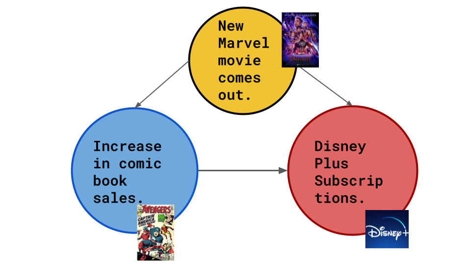
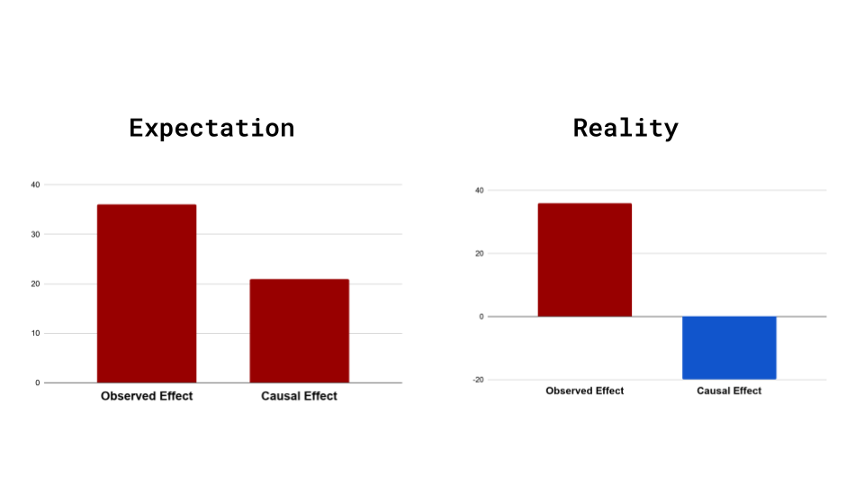
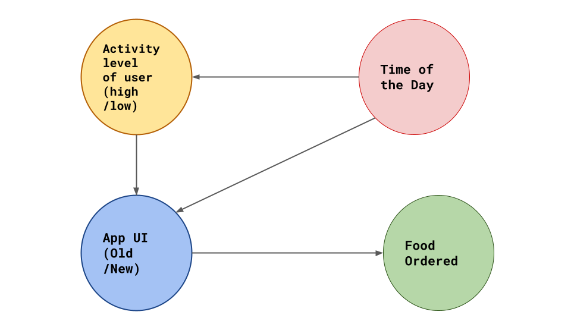

What do we mean when we talk about Causal Inference?
So what does Causal Inference really mean? What does it mean to cause? Is Causality really as simple as understanding cause and effect? Let us attempt to first understand few of the ground rules before we play the game of Causality. 
If you had a penny for every time you heard that line, you would probably be Bruce Wayne by now. But what does it mean? Why does correlation of two events not imply causality? What is up?
At this point you’re probably wondering, yeah I have heard about Causality a few hundred times, but do I really need to care?
Let me ask you a different question then.
How many times have you looked at the result of your model and wondered what-if the data was something other than what I trained on. Maybe you write an algorithm that predicts the sales of comic books, and your model works really well and produces high accuracy predictions, but you need to know why. Or maybe its the opposite, your algorithm predicts completely wrong sales figures and you really need to figure out a reason for that.
Confused? Let’s look at an example-
Suppose you are hired by Marvel as a data scientist. There has been a recent rise in comic book sales and you need to figure out the reason so that the company can mantain the sales figures. After some data analysis you come to the conclusion that there is a direct correlation between comic book sales and disney plus subscriptions. But you still don’t have an exact reason, so you come up with some scenarios to form a hypotheses.
Scenario 1
 The comics display ads from disney, so obviously an increase in comic book sales causes more Disney Plus subscriptions.
The comics display ads from disney, so obviously an increase in comic book sales causes more Disney Plus subscriptions.
Scenario 2
 Disney Plus has shows about comic book characters. New fans would like to consume more of such content. So increase in disney plus subscriptions lead to more marvel comics being bought.
Disney Plus has shows about comic book characters. New fans would like to consume more of such content. So increase in disney plus subscriptions lead to more marvel comics being bought.
Scenario 3
 Or maybe its something quite different. All Marvel Cinematic Universe movies are on Disney Plus. When a new Marvel movie comes out the hype around these characters lead to more comic book sales (and in turn more Disney Plus subscriptions).
The possibility presented in scenario 3 is what is termed as a hidden cause.
Each node is a variable and each arrow shows the direction of causal connection.
Suppose we build an accurate model to predict when the user will buy more comic books. But that is all that our model would do. When in reality, the actual problem statement could be better expressed by a question like-
What would the user have done if we had done something differently?
So you might be thinking, I get it the model doesn’t always take hidden causes into account, but it still works. The predictions are still accurate.
Well, it is actually considered really lucky to have our observed effect and causal effect in the same direction. More often than not we see the opposite in real world data.

Lets take a look at another example to understand this better-
Say suppose you have now taken up employment at a food ordering app as a Data Scientist. The product designer wants to introduce a new User Interface which she believes will engage more users. She has introduced the new UI to a select few people and wants you to make sense of the data that has been gathered. You decide to judge the the Old User Interface and the new one on a common criteria, which is whether the user orders after opening the app. Lets call this the opened-and-ordered criteria.
| UI Type | Ratio of users who opened-and-ordered to total users | Percentage |
|---|---|---|
| Old UI | 20/100 | 20% |
| New UI | 28/100 | 28% |
Based on this data, it seems pretty straightforward. The new UI is the clear winner. But something very strange happens when you condition the data on high activity vs low activity users.
| Old UI | New UI | |
|---|---|---|
| Percentage of Opened-and-Ordered for High Activity Users | 15/80 = 25% | 14/60 = 23.33% |
| Percentage of Opened-and-Ordered for Low Activity Users | 2/20 = 10% | 5/40 = 7.5% |
This discrepancy of data on being modeled on different subset of the original data is called “Simpson’s Paradox”. Google this later. :wink:
“But hey why does this discrepancy occur?”
Well maybe, since the old UI is already tried and tested it is shown to users only at a particular time of the day, around evening when app activity is generally high. The new UI might be shown at other times of the day when the number of lower activity users who are likely to order food is actually less.
So the Causal diagram may look something like this:

The debate on what it means to cause something and how cause precedes effect has been going on forever. Most prominent contestants include but are not limited to -
- Aristotle
- Hume
- Einstein
- That French guy from Matrix 3
- Judea Pearl and many more
However sadly until recently, the science of causal inference was not considered formal mathematics or even something that could be quantified and studied.
This was remedied hugely by the contributions of Judea Pearl (Causal Graphical Models) and Donald Rubin (Rubin Causal Model).
So in conclusion, what we really learned here was that simply because two variables are correlated does not necessarily mean that one is the direct cause of the other. If we do not keep an eye out for hidden causes and their effects we can actually do more harm through our model.
Therefore the idea of what would happen had something in the observation process been changed becomes an imperative question to ask.
This is called Counterfactual Thinking.
Counterfactual thinking, or specifically thinking about what-if scenarios is the very heart of causal inference.
Some of the ways we can answer a counterfactual question are -
- Randomization
- Natural Experiments
- Conditioning
Inetrestingly as we go down the list, the methods become much harder to use. But as we go up, the methods are more foolproof and give better validation results. We will take a closer look at these and the various underlying methodologies in the next blogpost, till then keep learning and don’t stop asking the question -
What-If?